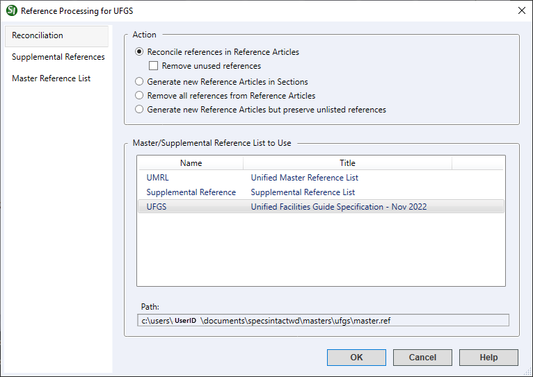

↵
This command can only be executed from the SpecsIntact Explorer's Process menu.
The Reconciliation tab provides a comprehensive suite of options for managing and reconciling References within a project. This includes the Master/Supplemental Reference List to Use option, allowing you to precisely designate the Reference list to be used for all reconciliation activities.
 The available options in SpecsIntact differ between Jobs and Masters, reflecting their distinct purposes and requirements. The Master Reference List tab is unique to Masters.
The available options in SpecsIntact differ between Jobs and Masters, reflecting their distinct purposes and requirements. The Master Reference List tab is unique to Masters.
 Click the tabbed commands on the image below to see how to use each function.
Click the tabbed commands on the image below to see how to use each function.

- Action - Provides a set of robust tools for efficiently managing References within the selected project.
- Reconcile references in Reference Articles - Adds the information to the Reference Articles for Reference Identifiers (RID) used in the Section text but not contained within the Reference Article.
- Remove unused references - Enables the system to remove References not used in the Section's text.
- Generate new Reference Articles in Sections - Deletes the existing Reference Articles, then generates new ones based on References used in the Section's text. This option is only available in Masters.
- Remove all references from Reference Articles - Removes all existing information from the Reference Articles. This option is only available in Masters.
- Generate new Reference Articles but preserve unlisted references - Rebuilds the Reference Articles for a Job or Master to use the latest References found in the Unified Master Reference List (UMRL), while also preserving the Unlisted References that only appear in the Section (.sec) file or the Supplemental Reference List. This multi-functional process combines all the reconciliation options above into a single process, making it a more efficient method for updating the Reference Articles in the selected Job or Master.
- Reconcile references in Reference Articles - Adds the information to the Reference Articles for Reference Identifiers (RID) used in the Section text but not contained within the Reference Article.
- Master/Supplemental Reference List to Use - List of available Master or Supplemental Reference Lists to use when performing the reconciliation actions. Once you have chosen one of the available actions, select the Unified Master Reference List (UMRL), a local Master Reference List, or the Supplemental Reference List to use for the applicable selected action.
- Path - Displays the Working Directory path and location of the Master Reference List (master.ref) file.
Standard Windows Commands
 The OK button will execute and save the selections made.
The OK button will execute and save the selections made.
 The Cancel button will close the window without recording any selections or changes entered.
The Cancel button will close the window without recording any selections or changes entered.
 The Help button will open the Help Topic for this window.
The Help button will open the Help Topic for this window.
Additional Learning Tools
 Watch the Master Reference Processing eLearning module within Chapter 7 - Master Preparation.
Watch the Master Reference Processing eLearning module within Chapter 7 - Master Preparation.